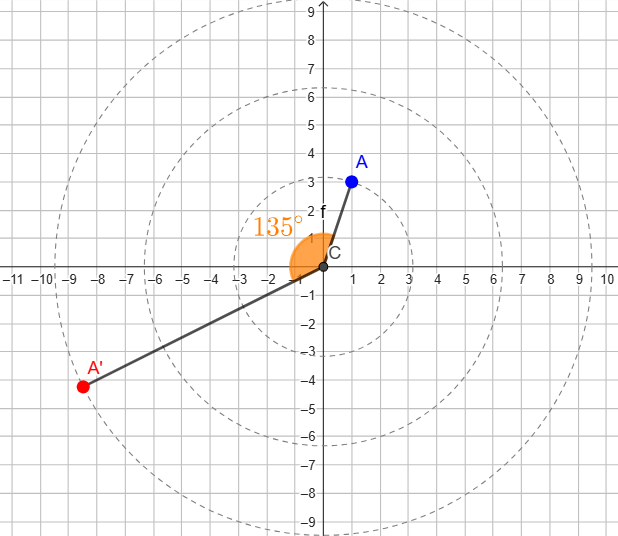

Compiti per casa
Esercizio 1
Svolgere le seguenti espressioni
\( (2 - i)^2 - \dfrac{4i + 3}{3i + 1} \)
Soluzione:
\(\,\, \dfrac{3}{2} - \dfrac{7}{2}i\)
\( (3 + 4i)\left(\dfrac{1}{3} - \dfrac{3}{2}i\right) - i^{20} - \dfrac{1}{i} \)
Soluzione:
\(\,\,6 - \dfrac{13}{6}i \)
\( 2\,\left[cos\left(\dfrac{2}{3}\pi\right) + sin\left(\dfrac{2}{3}\pi\right)i\right] \cdot 3\,\left[cos\left(\dfrac{7}{6}\pi\right) + sin\left(\dfrac{7}{6}\pi\right)i\right] + 1 + i \)
Soluzione:
\(\,\,1 + 3\sqrt{3} - 2i\)
\( \left(2 - 2i\right)^{9} + 8192\,i^{13} \)
Soluzione:
\(\,\,8192\)
Esercizio 2
Il punto \(A\) ha coordinate cartesiane \(\left(-3\,;\,\,3\right)\). Individuare le sue coordinate polari.
Soluzione:
\(\,\, \left(\dfrac{3}{4}\pi\,;\,\,2\sqrt{3}\right)\)
Il punto \(A\) ha coordinate polari \(\left(\dfrac{11}{6}\pi\,;\,\,5\right)\). Individuare le sue coordinate cartesiane.
Soluzione:
\(\,\, \left(\dfrac{5\,\sqrt{3}}{2}\,;\,\,-\dfrac{5}{2}\right)\)
Riscrivere il numero \(z = -2 - 2\sqrt{3}i\) in forma trigonometrica
Soluzione:
\(\,\, 4\,\left[cos\left(\dfrac{4}{3}\pi\right) + sin\left(\dfrac{4}{3}\pi\right)i\right]\)
Esercizio 3
Consideriamo i due numeri complessi \(A\) e \(B\) rappresentati in figura. Determinare \(w\) tale che \(A \cdot w = A'\).
